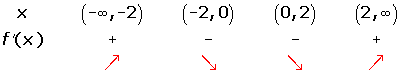
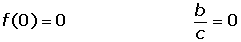

Ejercicios de aplicaciones de la derivada II
1Hallar los intervalos de crecimiento y decrecimiento de la función:

2Hallar los máximos y mínimos de la función:

3Determina las ecuaciones de la tangente y normal en su punto de inflexión a la curva: f(x) = x³ − 3x² + 7x + 1.
4La cantidad (y) expresa el dinero acumulado en una máquina tragaperras durante un día y sigue una ley del tipo:
y = 1/3x3 — 19x2 + 352x + 100
donde la variable x representa el tiempo en horas (de 0 a 24). Responde a las siguientes preguntas:
1 ¿Se queda alguna vez vacía de dinero la máquina?
2 Si se realiza la "caja" a las 24 horas. ¿Arroja ganancias para los dueños de la máquina?
3 ¿A qué hora la recaudación es máxima y a qué hora es mínima?
4 ¿Cuándo entrega el mayor premio?
5Sea f(x) = x3 + ax2 + bx + 7. Hallar a y b de manera que la gráfica de la función f(x) tenga para x= 1 una inflexión, y cuya recta tangente en ese punto forme un ángulo de 45° con el eje OX.
7Determinar a, b y c para que la función f(x) = x 3 + ax2 + bx + c tenga un máximo para x = −4, un mínimo, para x = 0 y tome el valor 1 para x = 1.
8Determinar el valor de a, b, c y d para que la función f(x) = ax3 + bx2 + cx + d tenga un máximo en (0, 4) y un mínimo en (2, 0).
8Determinar el valor de a, b, c y d para que la función f(x) = ax3 + bx2 + cx + d tenga un máximo en (0, 4) y un mínimo en (2, 0).
9Determinar a, b, c, d y e, de modo que la curva f(x) = ax4 + bx3 + cx2 + dx + e, tenga un punto crítico en (1, 3) y un punto de inflexión con tangente de ecuación y = 2x en (0, 0).
10La curva f(x) = x3 + ax2 + bx + c corta al eje de abscisas en x = 3 y tiene un punto de inflexión en (2/3, 1/9). Hallar a, b y c.
11Dada la función:

Calcula a, b y c, de modo que f(x) tenga en (2, −1) un extremo local y que la curva pase por el origen de coordenadas.
12Hallar a y b para qué la función: f(x) = a · ln x + bx2 + x tenga extremos en los puntos x1 = 1 y x2 = 2. Para esos valores de a y b, ¿qué tipo de extremos tienen la función en 1 y en 2?
- 1
- 2
- 3
- 4
- 5
- 6
- 7
- 8
- 9
- 10
- 11
Ejercicio 1 resuelto
Hallar los intervalos de crecimiento y decrecimiento de la función:




Ejercicio 2 resuelto
Hallar los máximos y mínimos de la función:


Ejercicio 3 resuelto
Determina las ecuaciones de la tangente y normal en su punto de inflexión a la curva: f(x) = x³ − 3x² + 7x + 1.
f′ (x) = 3 x 2 − 6x + 7
f′′ (x) = 6 x − 6
6 x − 6 = 0 x= 1
f′′′(x) =12 f′′′(1) ≠ 0 f(1)= 6
Punto de inflexión: (1, 6)
m t = f′(1) = 4 m n = −1/4
Recta tangente: y − 6 = 4 (x − 1) 4x − y + 2 = 0
Recta normal: y − 6 = − 1/ 4 (x − 1) x + 4 y − 25 = 0
Ejercicio 4 resuelto
La cantidad (y) expresa el dinero acumulado en una máquina tragaperras durante un día y sigue una ley del tipo:
y = 1/3 x3 — 19 x2 + 352x + 100
donde la variable x representa el tiempo en horas (de 0 a 24). Responde a las siguientes preguntas:
1 ¿Se queda alguna vez vacía de dinero la máquina?
Entre 0 y 24 la función es distinta de cero, por lo cual la máquina siempre tiene monedas.
Hay un mínimo absoluto en (0, 100).
2 Si se realiza la "caja" a las 24 horas. ¿Arroja ganancias para los dueños de la máquina?
Ganancia: f(24) − f(0)= 2212 − 100 = 2112
3 ¿A qué hora la recaudación es máxima y a qué hora es mínima?
f′(x)= x² − 38x + 352 x² − 38x + 352 = 0
x = 16 x = 22
f′′(x)= 2x − 38
f′′(16) = 32 − 38 < 0Máximo (16, 6700/3)
f′′(22) = 44 − 38 > 0Mínimo (22, 6592/3)
4 ¿Cuándo entrega el mayor premio?
El mayor premio será igual al punto de inflexión.
f′′′(x) = 2
2x − 38 = 0x = 19
Ejercicio 5 resuelto
Sea f(x) = x3 + ax2 + bx + 7. Hallar a y b de manera que la gráfica de la función f(x) tenga para x= 1 una inflexión, y cuya recta tangente en ese punto forme un ángulo de 45° con el eje OX.
f'(x) = 3x2 + 2 ax + b f′′(x) = 6x + 2a
f′(1) = 1 3 + 2a + b = 1
f′′(1) = 0 6 + 2a = 0
a = − 3 b = 4
Ejercicio 6 resuelto
Obtener la ecuación de la tangente a la gráfica de f(x) = 2x3 − 6x 2 + 4 en su punto de inflexión.
f′(x) = 6x 2− 12xf′′(x) = 12x − 121
2 x − 12 = 0x = 1
f′′′(x) = 12 f′′′(1) ≠ 0 f(1) = 0
Punto de inflexión: (1, 0)
f′(1) = 6 − 12= − 6 = m
y − 0 = −6(x − 1)y = −6x + 6
Ejercicio 7 resuelto
Determinar a, b y c para que la función f(x) = x 3 + ax2 + bx + c tenga un máximo para x = −4, un mínimo, para x = 0 y tome el valor 1 para x = 1.
f(x) = x3 + ax2 + bx + c f′(x) = 3x2 + 2ax + b
1 = 1 + a + b + c a + b + c = 0
0 = 48 − 8a + b 8a − b = 48
0 = 0 − 0 + b b = 0
a = 6 b = 0 c = −6
Ejercicio 8 resuelto
Determinar el valor de a, b, c y d para que la función f(x) = ax3 + bx2 + cx + d tenga un máximo en (0, 4) y un mínimo en (2, 0).
f(x) = ax3 + bx 2 + cx +df′(x) = 3ax2 + 2bx + c
f(0) = 4 d = 4
f(2) = 0 8a + 4b + 2c = 0
f′(0) = 0 c = 0
f′(2) =0 12a + 4b + c = 0
a = 1 b = −3 c = 0 d = 4
Ejercicio 9 resuelto
Determinar a, b, c, d y e, de modo que la curva f(x) = ax4 + bx3 + c x2 + dx + e, tenga un punto crítico en (1, 3) y un punto de inflexión con tangente de ecuación y = 2x en (0, 0).
f′(x) = 4ax3 + 3bx2 + 2cx + d f′′(x) = 12ax2 + 6bx + 2c
f′(x) = 4ax3 + 3bx2 + 2cx + d f′′(x) = 12ax2 + 6bx + 2c
f(1) = 3a + b + c + d = 3
f(0) = 0 e = 0
f′(1) = 3 4a + 3 b + 2c + d = 3
f′(0) = 2 d = 2
f′′(0) = 0 2c = 0
a = −5 b = 6 c = 0 d = 2 e = 0
Ejercicio 10 resuelto
La curva f(x) = x 3 + a x2 + b x + c corta al eje de abscisas en x = 3 y tiene un punto de inflexión en (2/3, 1/9). Hallar a, b y c.

Ejercicio 11 resuelto
Dada la función:

Calcula a, b y c, de modo que f(x) tenga en (2, −1) un extremo local y que la curva pase por el origen de coordenadas.

Ejercicio 12 resuelto
Hallar a y b para qué la función: f(x) = a · ln x + bx2 + x tenga extremos en los puntos x1 = 1 y x2 = 2. Para esos valores de a y b, ¿qué tipo de extremos tienen la función en 1 y en 2?
 Ejercicios
Ejercicios